Land & Cadastral Survey
Boundary establishment, parcel subdivision, title mapping and land administration support — defensible to the last centimetre.
- Parcel mapping
- Boundary disputes
- Land registry
Accurate data. Smarter decisions. A better tomorrow — from cadastral and engineering surveys to satellite imagery, LiDAR, GIS and spatial analytics. One partner from the first benchmark to the final map.
Most projects need more than one discipline. We hold surveying, remote sensing, GIS and software under one roof, so your data never gets lost in a handover.
Boundary establishment, parcel subdivision, title mapping and land administration support — defensible to the last centimetre.
Setting out, as-built verification, cross-sections, volumes and earthworks control for roads, dams, pipelines and buildings.
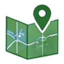
From scattered spreadsheets to a governed geodatabase: data models, QA pipelines, cartography and enterprise GIS.
Optical and radar imagery acquisition, orthorectification, DEM generation and time-series change detection.
Drone photogrammetry and laser scanning for terrain models, corridor mapping, stockpile volumes and 3D city models.
Cloud-hosted spatial platforms, field data collection apps and live dashboards your teams can actually operate.
Automated feature extraction, land-cover classification, suitability modelling and predictive analytics on spatial data.
Supply, calibration, repair and after-sales support for GNSS receivers, total stations, levels and drones.
Practical, certification-tracked courses in surveying, GIS, remote sensing and data science for teams and institutions.
SiteTrackerPro is our construction tracking platform. Survey points become cut and fill volumes, volumes become material quantities and bills of quantities, and deliveries are scored for risk — with a progress history you can defend in a meeting.
Every engagement follows the same disciplined sequence, with a fixed deliverable list agreed before fieldwork starts.
Site visit, control reconnaissance, accuracy specification and a written scope with deliverables and dates.
GNSS, total station, level or UAV crews collect to the agreed specification, with daily checks and backups.
Adjustment, reduction and drafting, independently checked against control before anything leaves the office.
CAD, GIS and PDF deliverables with a metadata sheet, plus handover training and revision support.
Accuracy standards, reporting formats and approval paths differ by industry. We come in already knowing yours.
Corridor surveys, design alignment, setting out and as-built records.
Network mapping, asset registers and GIS units for utilities.
Transmission line mapping, right-of-way and route selection.
Irrigation design, land suitability, plot registration and yield analytics.
Base mapping, parcel fabric, zoning analysis and 3D city models.
Stockpile volumetrics, pit monitoring and concession boundary control.
Land administration, monitoring frameworks and capacity building.
Land-cover change, flood modelling and habitat mapping.
A sample of the survey, mapping and systems work our team has delivered for public and private clients.
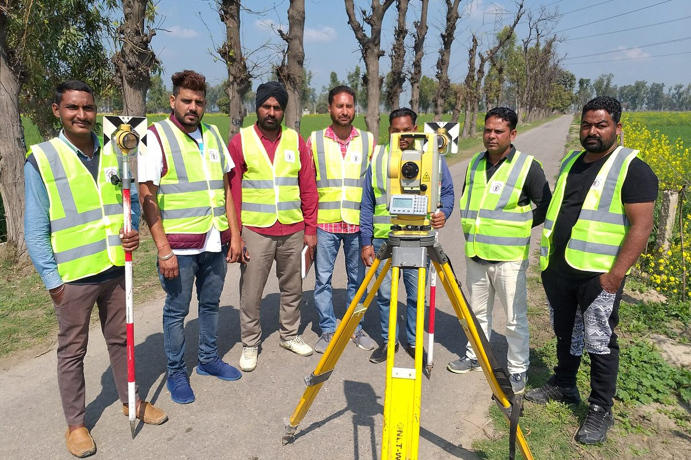
Established surveyed control and re-mapped 4,200 parcels, reconciling conflicting records into a single authoritative geodatabase.
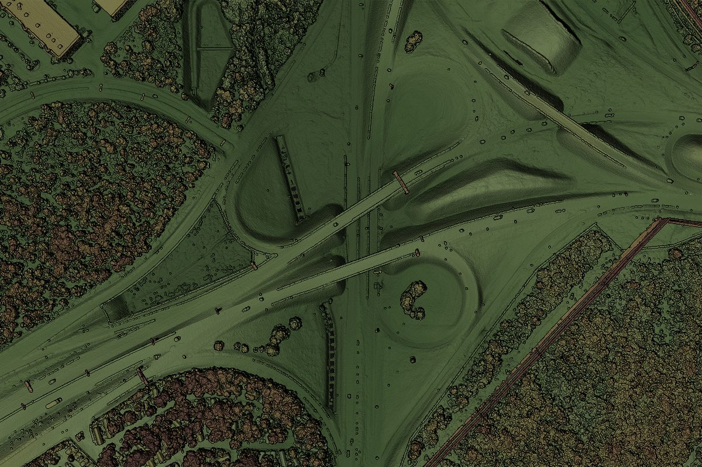
Topographic corridor survey, cross-sections and volume quantities feeding directly into the detailed design package.
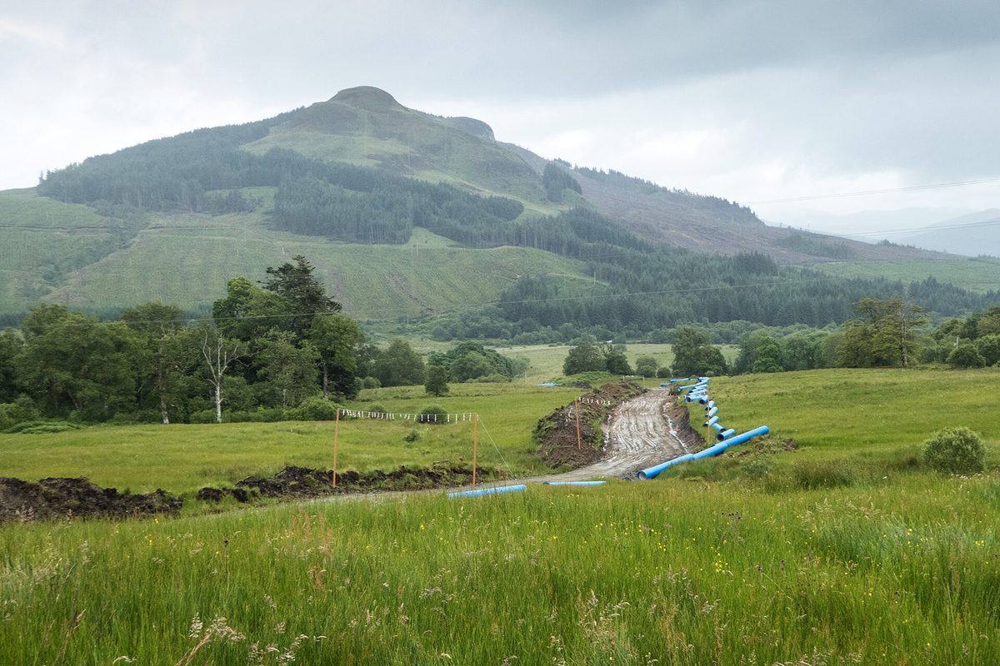
Mapped 610 km of distribution network, built an asset register and trained the utility's team to maintain it in-house.
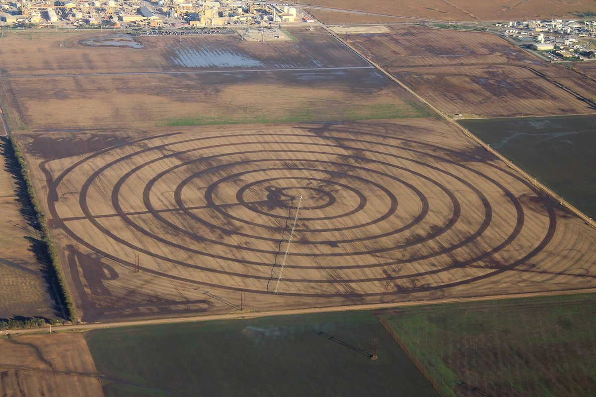
Time-series classification of 15 years of imagery to quantify urban expansion and cropland conversion for a regional plan.
Same flight, same ground. Drag the handle to move between the raw drone imagery and the map we actually hand over — orthophoto, parcel fabric, road reserve, hydrography, legend and scale.
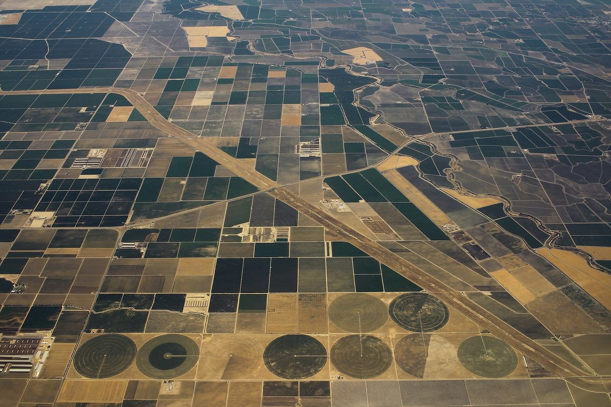
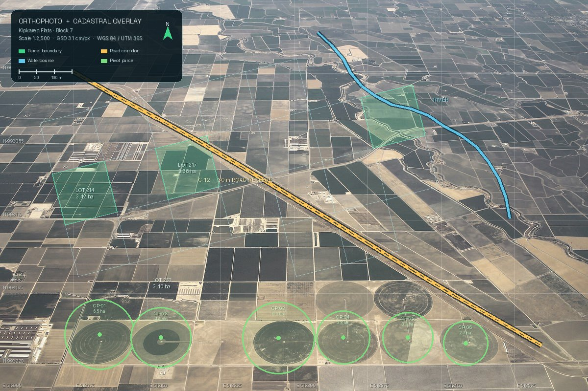
Every deliverable is issued with a title block, projection, scale, legend and an accuracy statement — so it can be checked, filed and approved by your consultants, lenders and regulators without a round of questions.
The work behind the deliverables — control establishment, RTK capture, setting-out, aerial acquisition and processing. Click any frame to view it larger.
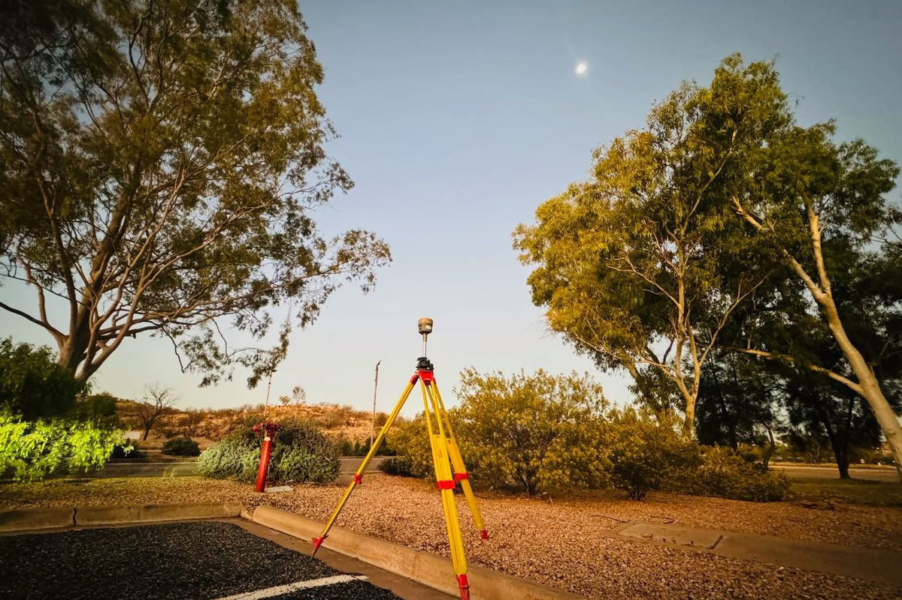
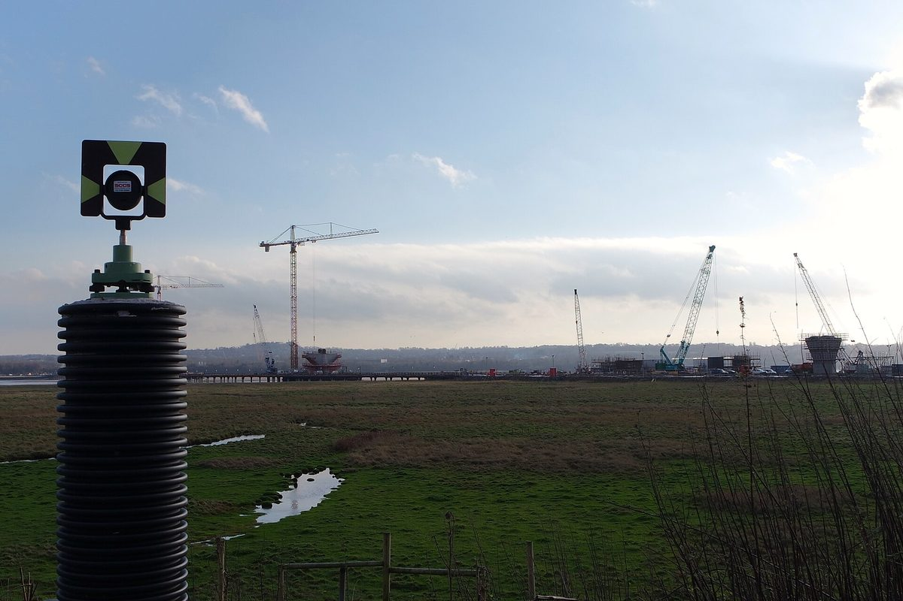
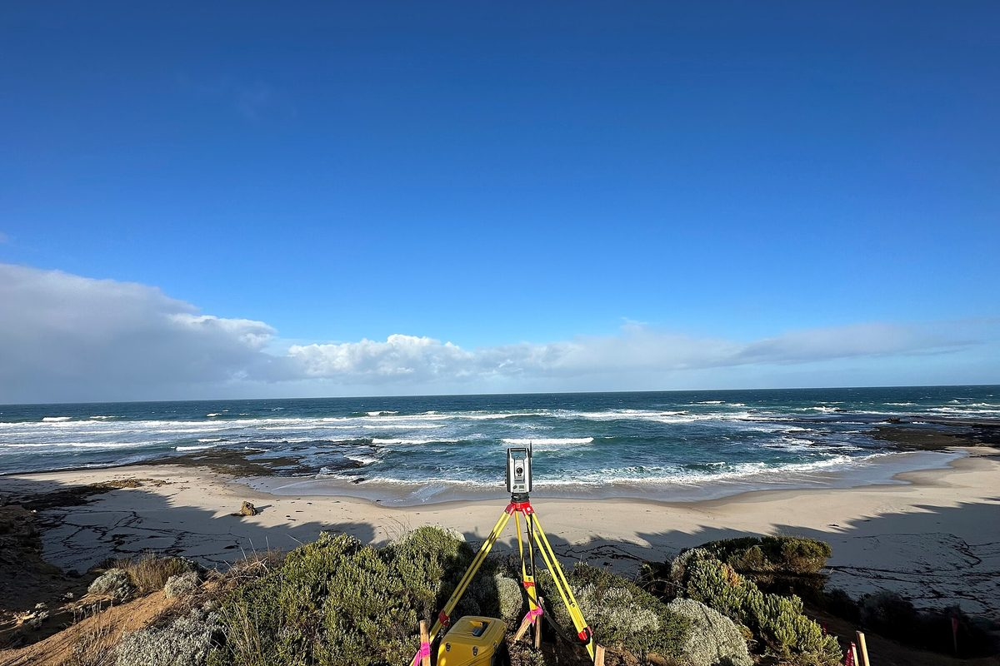
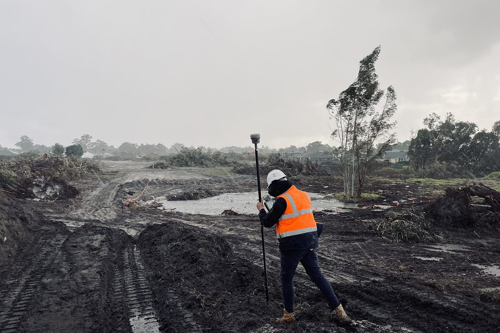
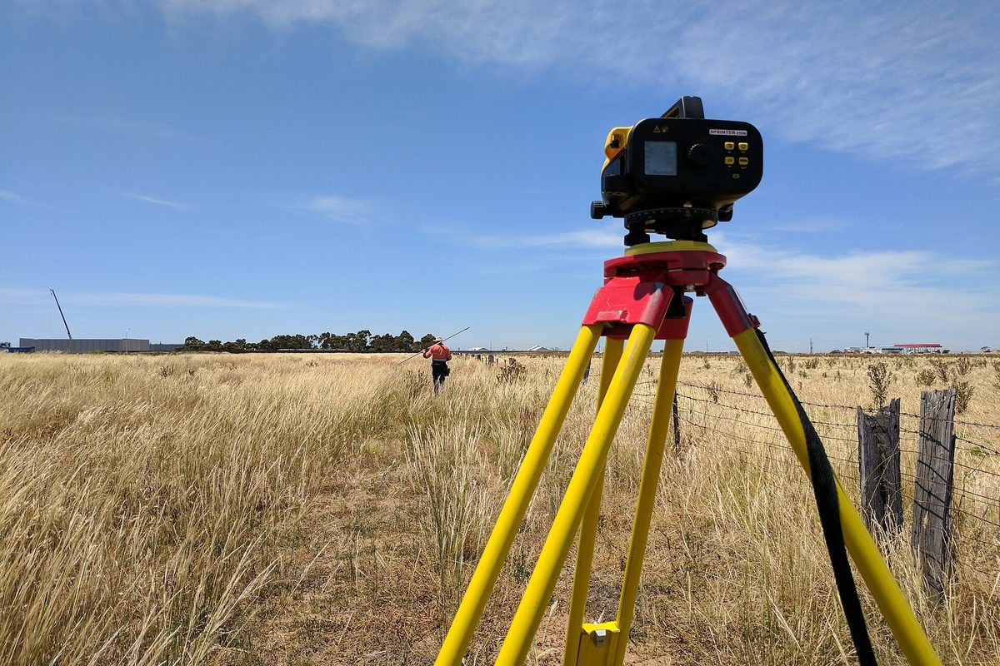
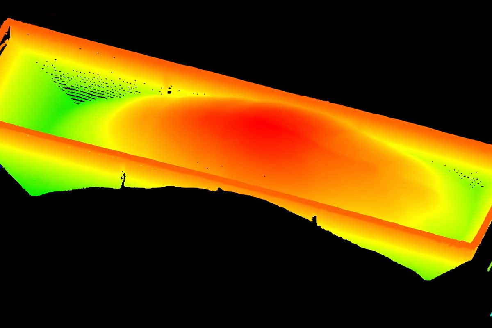
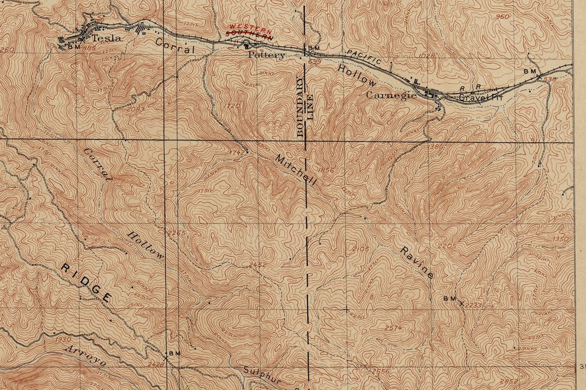
Field and aerial photographs are illustrative, sourced from Wikimedia Commons under the licences listed. Replace them with your own project photography before launch.
TIMONA Geospatial and Surveying is a licensed surveying and geospatial practice working across East Africa. We combine field crews who understand construction tolerances with analysts who understand data, so a project doesn't stop at a drawing — it ends with a decision.
No subcontractor chains, no ambiguous accuracy claims. Clear scope, calibrated instruments, checked work and deliverables your consultants, lenders and regulators can accept without question.
Every deliverable is signed off by a registered surveyor — not an unverified technician.
Deployment-ready teams and calibrated equipment, with a realistic programme agreed up front.
Second-operator checks against control points on every job, logged and reportable.
Standard, documented formats — CAD, GIS, GeoTIFF, PDF — plus metadata, not a proprietary black box.
Your team is trained on the data and tools, so the capability stays after we leave.
Standards, formats and approval paths we already know — shorter ramp-up, fewer revisions.
Send the site, the scope or just the problem. You'll get a clear methodology, a timeline and a fixed quotation — usually within two working days.
Share a few details and we'll come back with approach, programme and cost. For urgent fieldwork, call the line below.